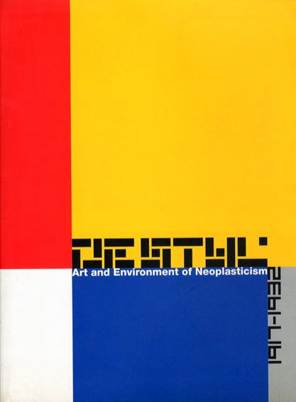

-
- de stijl
- De Stijl fue la primera revista de vanguardia dedicada a la causa de la abstracción en el arte y la arquitectura. Se inaguró en octubre de 1917. Esta vanguardia se creó durante un período de caos absoluto en el que la mayoría de los europeos sentía anhelos de armonía y equilibrio. Las ilustraciones en De Stijl se diseñaban para exponer la unidad estilística y validar el trabajo de los colaboradores, a quienes se les ofrecía un foro donde escribir sobre su trabajo y el del resto de artistas del grupo.
- 